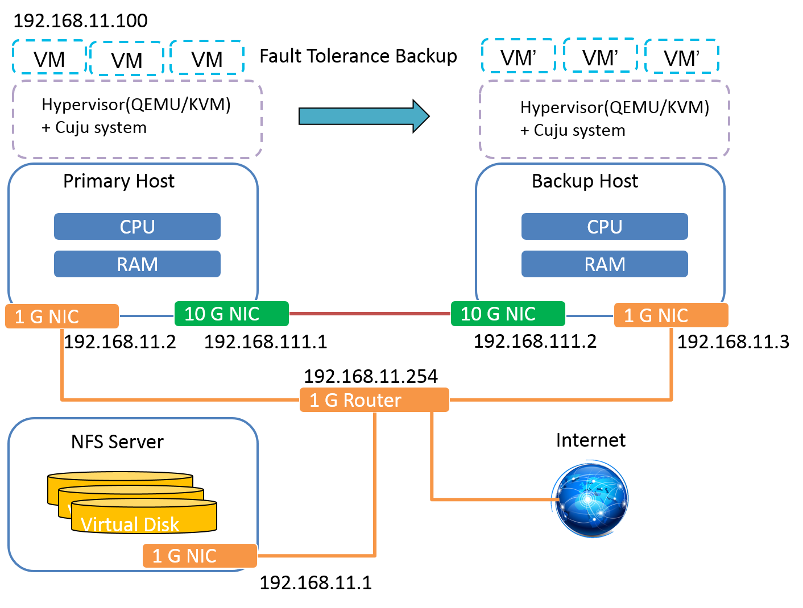

Cuju Start Guide
The environment prepare
- Assume you have already builded Primary, Backup and NFS node
- A recommended topology
below:

- Open the Intel virtualization support (VT-x) in your bios.
- Install OS in all nodes: Ubuntu-16.04-desktop-amd64.iso
- Install related packages in all nodes
$ sudo apt-get update
$ sudo apt-get install vim gcc make gdb fakeroot build-essential \
kernel-package libncurses5 libncurses5-dev zlib1g-dev \
libglib2.0-dev qemu xorg bridge-utils openvpn vncviewer \
libssl-dev libpixman-1-dev
Download Linux-4.4 source in Primary and Backup node
Go to your Linux-4.4 source forder and change the current Linux config
$ cd linux-source-4.4.0
$ cp /boot/config-`uname -r` ./.config
$ make menuconfig
Disable following item:
Processor type and features
[ ] x86 PAT support
Kernel hacking
[ ] Filter access to /dev/mem
Compile and install kernel
$ make-kpkg clean
$ fakeroot make-kpkg --initrd kernel_image kernel_headers -j7
$ cd ~
$ sudo dpkg -i linux-image-4.4.35_4.4.35-10.00.Custom_amd64.deb
$ sudo dpkg -i linux-headers-4.4.35_4.4.35-10.00.Custom_amd64.deb
Set up the bridge and network environment
- You can follow our recommended topology to set up the network environment
- The example of network interfaces set up below (edit your /etc/network/interfaces):
#NFS node
auto lo
iface lo inet loopback
auto eth0
iface eth0 inet static
address 10.1.10.10
netmask 255.255.255.0
gateway 10.1.10.254
dns-nameservers 8.8.8.8
auto eth1
iface eth1 inet static
address 192.168.11.1
netmask 255.255.255.0
dns-nameservers 8.8.8.8
#Primary node
auto lo
iface lo inet loopback
auto br0
iface br0 inet static
bridge_ports eth0
bridge_maxwait 0
address 192.168.11.2
netmask 255.255.255.0
gateway 192.168.11.1
dns-nameservers 8.8.8.8
auto eth0
iface eth0 inet static
address 0.0.0.0
auto eth1
iface eth1 inet static
address 192.168.111.1
netmask 255.255.255.0
#Backup node
auto lo
iface lo inet loopback
auto br0
iface br0 inet static
bridge_ports eth0
bridge_maxwait 0
address 192.168.11.3
netmask 255.255.255.0
gateway 192.168.11.1
dns-nameservers 8.8.8.8
auto eth0
iface eth0 inet static
address 0.0.0.0
auto eth1
iface eth1 inet static
address 192.168.111.2
netmask 255.255.255.0
- Build the high-speed connections with Primary and Backup nodes by the eth1
- After editing these network interfaces, type "/etc/init.d/networking restart" or reboot
Install the NFS service (Network FileSystem) in NFS node; then create a NFS forder placing the VM image
$ sudo apt-get install nfs-kernel-server
- Insert this line in "/etc/exports" to add your NFS forder:
/home/[your username]/nfsfolder *(rw,no_root_squash,no_subtree_c
heck)
Install the NFS client in Primary and Backup nodes; then mount the NFS forder
$ apt-get install nfs-common
$ mount -t nfs 192.168.11.1:/home/[your username]/nfsfolder /home
/[your username]/data
In NFS node, go to your nfs forder, then download
Cuju
and build a VM image file (or download our Ubuntu-16.04 VM image file, the account/password is root/root), they will be synced with Primary and Backup node.
Before launching your VM, you should prepare these scripts below in Primary and Backup nodes:
#!/bin/sh
WORKSPACE=/your_work_path/data
sudo $WORKSPACE/reinsmodkvm.sh
sudo $WORKSPACE/set-net.sh
sudo $WORKSPACE/set-vmft.sh
#!/bin/sh
/usr/sbin/openvpn --mktun --dev tap0 --user `id -un`
#ip tuntap add tap0 mode tap
ifconfig tap0 promisc up
brctl addif br0 tap0
#!/bin/sh
cd /your_work_path/Cuju/kvm
lsmod | grep kvm
sudo rmmod kvm_intel
sudo rmmod kvm
sudo insmod ./x86/kvm.ko
sudo insmod ./x86/kvm-intel.ko
lsmod | grep kvm
#!/bin/sh
mkdir /dev/cgroup
mount -t cgroup -o cpuset cpuset /dev/cgroup/
mkdir /dev/cgroup/vmft/
echo 7 > /dev/cgroup/vmft/cpuset.cpus
echo 1 > /dev/cgroup/vmft/cpuset.cpu_exclusive
echo 0 > /dev/cgroup/vmft/cpuset.mems
Execute "pre.sh" before launching VM in Primary and Backup nodes
Cuju Install and Execute